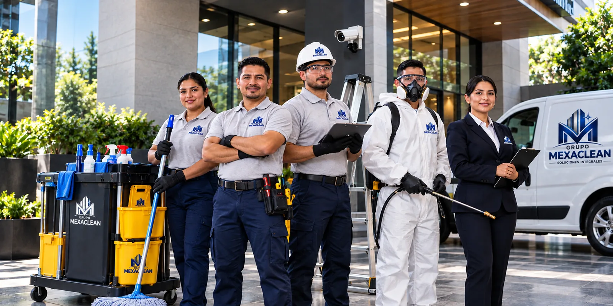
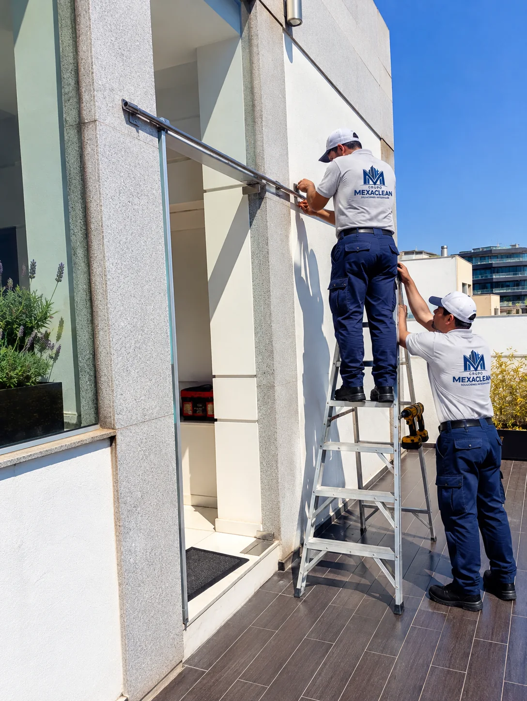
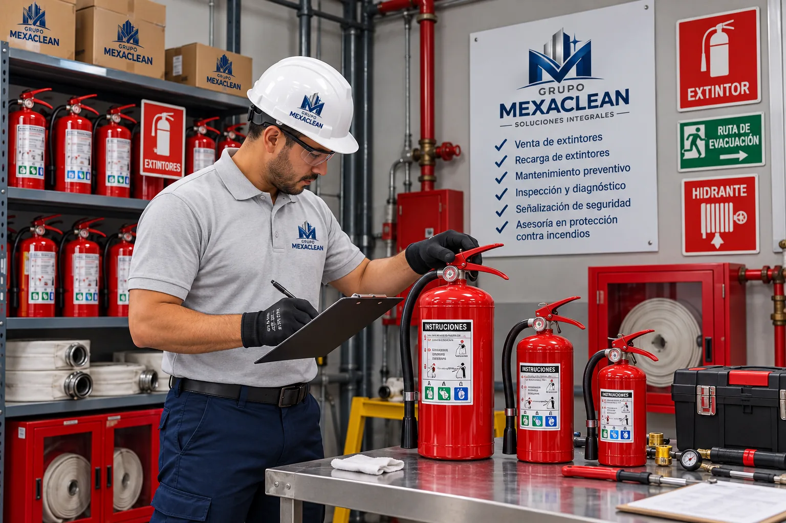
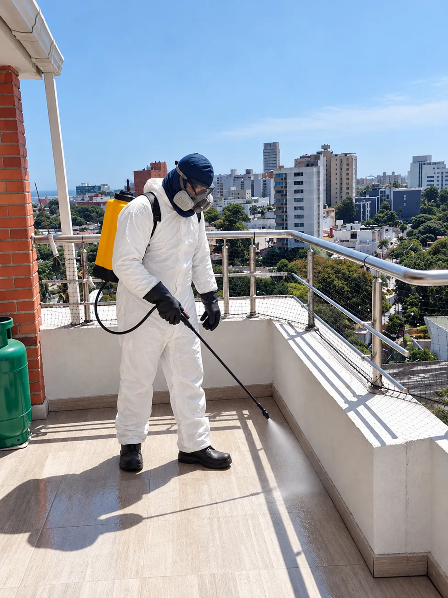
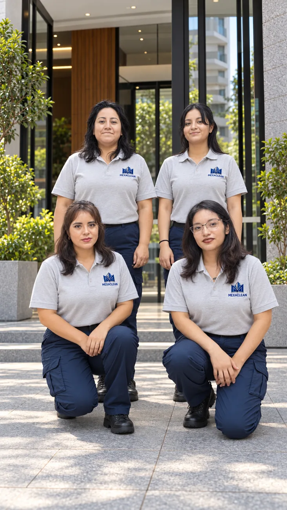

Limpieza profesional
Limpieza de áreas comunes, condominios, escuelas, oficinas, corporativos y centros comerciales.
Conocer servicio →Soluciones integrales de limpieza para tu condominio o empresa. Limpieza, fumigación y mantenimiento con personal capacitado y uniformado.

Soluciones para condominios, escuelas, oficinas, centros comerciales y espacios corporativos.
Limpieza de áreas comunes, condominios, escuelas, oficinas, corporativos y centros comerciales.
Conocer servicio →
Mantenimiento preventivo y correctivo de instalaciones y espacios comunes.
Conocer servicio →Soluciones de CCTV, interfones, cercas electrificadas y sistemas de acceso.
Conocer servicio →Apoyo en la coordinación administrativa y operativa de inmuebles.
Conocer servicio →
Venta, recarga y mantenimiento de extintores, señalización y sistemas de protección.
Conocer servicio →
Suministro de insumos, materiales y productos para operación y limpieza.
Conocer servicio →
Servicios de control de plagas para espacios residenciales y comerciales.
Conocer servicio →Atención, control de accesos y apoyo operativo en inmuebles.
Conocer servicio →En Grupo Mexaclean contamos con cinco años de experiencia ofreciendo soluciones para el cuidado, funcionamiento y operación de inmuebles. Buscamos adaptarnos a las necesidades de cada cliente mediante atención, seguimiento y soluciones prácticas.
Contáctanos
Un aliado para la operación cotidiana de tus instalaciones.
Escuchamos las necesidades de cada inmueble para proponer un alcance adecuado.
Comunicación y organización operativa de acuerdo con los servicios contratados.
Distintas especialidades de servicio a través de un mismo grupo.
Soluciones adaptadas a las necesidades de cada tipo de inmueble.
Conoce parte de nuestro trabajo en limpieza, mantenimiento y atención de inmuebles a través de nuestro video corporativo.
Brindamos soluciones para condominios, oficinas, escuelas y empresas en Ciudad de México y Estado de México.
Solicitar cotización¿Necesitas una propuesta específica? Nuestro equipo puede orientarte.
Atendemos Ciudad de México y Estado de México. La disponibilidad depende del tipo de servicio y ubicación.
Cuando las características del inmueble o del trabajo lo requieren, podemos coordinar una visita de reconocimiento.
Depende del servicio contratado. Los materiales, equipos y alcances se detallan en la propuesta.
Sí. Podemos preparar una propuesta que considere distintas necesidades de tu inmueble.
Atendemos Ciudad de México y Estado de México. Solicita información o una cotización personalizada.
Teléfonos adicionales: 55 7110 7738 · 56 2411 5280
Correo: grupomexaclean@gmail.com